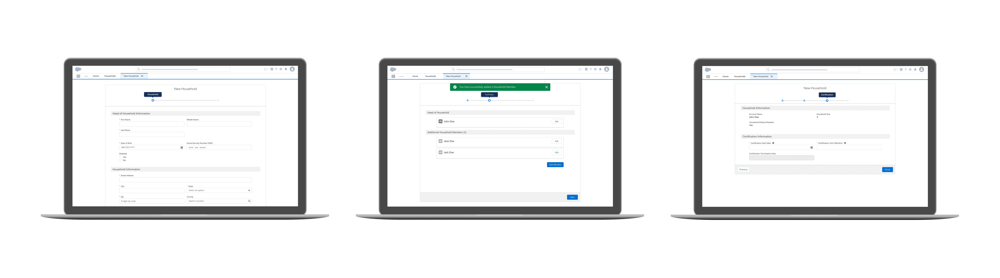
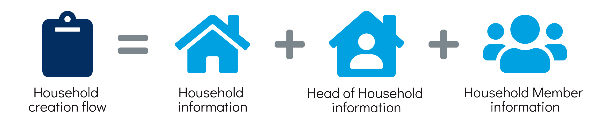
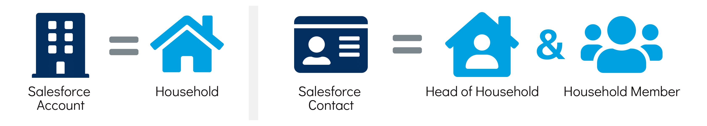

Modernizing a federal aid program's legacy system with Salesforce
Role: UX design
Tools: Sketch, Abstract
Platform: Web
Time: 2 months, Summer '19
During my internship at Deloitte Digital, I worked on a cross-functional Scrum team supporting the Salesforce replacement of a federal aid program's 30-year-old management system. Sensitive details regarding the client and project have been omitted from descriptions and screens.
My main contributions were designing and updating Salesforce mockups and creating a client deliverable of our design decisions with associated heuristics and principles.
One of the client’s federal aid programs serves 90,000+ monthly participants and 270+ overall organizations. The legacy system used to support participant registration and certification is being replaced with the Salesforce platform.
How might we ease the transition from the legacy system to its Salesforce replacement for the participant registration and certification flow?
The new registration and certification process breaks down the legacy system’s single creation screen into a multi-step flow within the Salesforce environment.
In order to participate in the federal aid program, applicants must enter their information under a Household account in which each Household is made up of one Head of Household and optional Household Members. This information is used to register and certify participants, a process that is referred to as "Household creation flow" throughout this design.
In the legacy system’s creation screen, information entry was split up into Head of Household and Household Member sections, so there was no distinct area for general Household details like address, phone number, email, etc. Instead, these details were stored under the Head of Household.
On the Salesforce platform, information is stored under Accounts (i.e., companies or organizations) and Contacts (i.e., individual people). We introduced the concept of a Household, stored as an Account, while Head of Household and Household Members were stored as Contacts.
The team originally considered the Salesforce Out-of-the-Box (OOTB) Flow Builder for this creation flow, but the limited screen components compromised the user experience. They then recommended creating a custom flow with the wider range of components offered in the Salesforce Lightning Design System, which was approved by the client.
User observations of the legacy system had not yet been scheduled, so we had to make assumptions of legacy system operation based on available documentation and team/client understanding.
The legacy system’s Household creation was completed on one screen. Implementing a one-page screen in the Salesforce environment would lead to an overwhelmingly long form, so we identified three main steps from the original creation screen that formed three separate form pages in the OOTB flow and adapted them for this custom flow.
The first step asks for the minimum information required for Household creation: general Household details, individual Head of Household details, and Certification information. We separated Household information from Head of Household information using title sections but kept both in the same step to maintain their original association in the legacy system.
The second step asks for Household Member information. Since the typical Household size is 1-2 Members, many Households would not require information entry in this step, so the separation of Household/Head of Household from Household Member in this creation process streamlines the flow.
I identified components from the Salesforce Lightning Design System that could be used for our flow and took a first pass at creating our mockups. These screens were then revised by the team’s lead designer for minor formatting and alignment issues. Frequent design reviews with product managers and architects led to the following highlighted findings that resulted in more significant revisions.
Certification information is dependent on details from every Household Member, but in our first iteration of the flow, it was inputted before the Household Member step as a way to expedite data entry. We revised the flow to include Certification as an additional step.
Information records in Salesforce must be created after each step/page. This meant we couldn’t allow users to save their progress and create all records upon flow completion. We also couldn’t allow users to move backwards in the flow to the Household step due to technical complexities expressed by team architects. Instead, our lead designer incorporated the ability to edit these inputs in the following Household Members step, renamed to Summary. Button language was changed to indicate creation rather than progression.
These mockups, along with a list of Salesforce Lightning Design System components used, were handed off to team architects to create the flow that was presented by product managers to our client and approved at our Sprint Review Meeting. The client deliverable includes the sample of design details highlighted below. Please reach out if you would like to see the full document.
Visibility of system status: Progress indicator keeps users informed of where they are in the multi-step flow.
Match between system and real world: Separate sections for Head of Household information and Household information helps transition users to the concept of a Household. Placing these two sections in the same Household step subtly acknowledges that the two were previously combined under Head of Household.
Help users recognize, diagnose, and recover from errors: The combination of overall error banner and in-line error messages assists users in identifying their errors. This improves upon the OOTB error message, since the OOTB flow only indicated in-line errors.
Flexibility and efficiency of use: The average Household size is 1-2 members, so the Summary step streamlines the flow by giving users the option to proceed to the next step without adding additional Household Members.
Consistency and standards: The screen layout mimics the legacy system’s visual separation of Household Members from the Head of Household, demonstrating external consistency.
Recognition rather than recall: Display of read-only Household information relevant to Certification reduces cognitive load for users to recall previously entered information.
Consistency and standards: Use of the Head of Household’s full name as the Household name maintains external consistency with the legacy system.
This was my first experience designing something to fruition outside of a controlled classroom environment, and I learned some of the basic constraints of designing in the real world.
The traditional UX process isn’t always possible on a real client project. In an ideal world, we’d be able to speak with our users to understand their perspectives, but scheduling abilities for user observations were out of our team’s control, so we had to make assumptions based on what we already knew and what resources we already had.
Design heuristics and principles can’t always be followed due to technical constraints. During design reviews for this flow and design coaching sessions for other Salesforce components, some of my suggestions couldn’t be implemented, so I had to think of alternate solutions and recognize that while constraints might not exist in the classroom environment, they definitely do in the real world.
Overall, this internship was an incredibly valuable learning opportunity given to me by our lead designer and entire team, and I’m thankful to have played a part in supporting a program that helps such a large population!